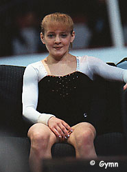

Viktoria Karpenko (UKR/BUL)
1999 World AA Silver Medalist

Medal Total
Viktoria was born on March 15, 1981 in Kherson (Ukrainian SSR). She was coached by Oleg Ostapenko at Ukraine's training center in Koncha Zaspa. Injuries prevented her from competing in two major competitions. Prior to the 1996 Olympics, Karpenko pulled a hamstring; in 1997 she broke two fingers just days before the start of the World Championships. At the 1999 World Championships, she won the AA silver medal and was a favorite to win the 2000 Olympics. But a stumble on FX left her in 11th. In June 2002, Karpenko moved to Bulgaria. She returned to competition -- for Bulgaria -- in 2003. An ACL tear at the 2003 Gander Memorial put an end to Karpenko's comeback.
Competition Results
2000
Cottbus Cup: 1st UB, 3rd B, 5th V, 6th FX
DTB Cup: 3rd V, 3rd B, 5th FX
European Championships: 2nd Team, 3rd AA, 2nd
UB, 2nd FX, 4th B, 5th V
Olympics: 6th Team, 11th AA, 4th UB
Swiss Cup: 2nd Team
World Cup: 4th B, 5th FX, 7th V
2003
BUL Championships: 2nd AA
BUL Cup: 1st AA
Gander Memorial: 10th AA (withdrew with injury)
GRE-BUL-HUN Meet: 3rd AA
Siska International: 3rd AA, 2nd UB
Varna International: 3rd AA
World Championships: 19th Team, 37th AA (prelims)
2007
European Championships: 18th AA